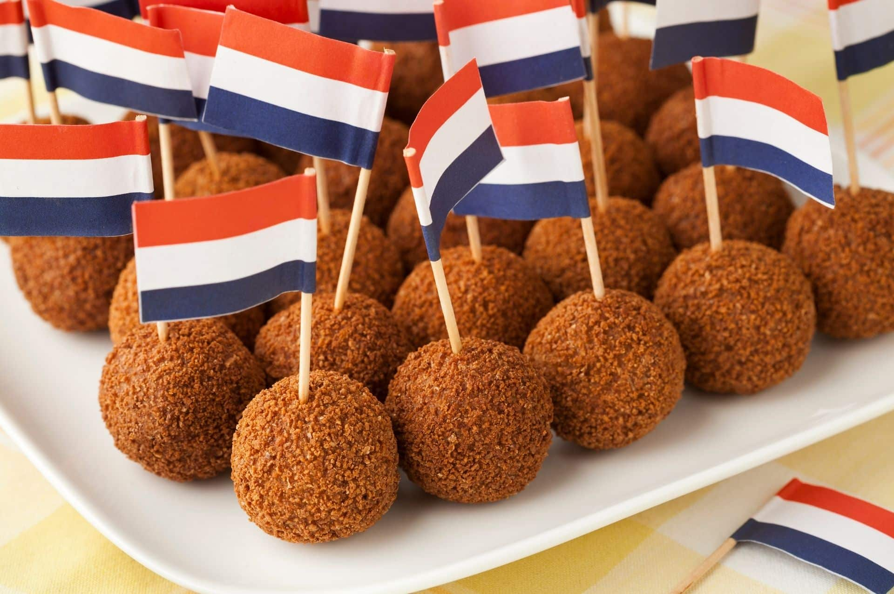

Recepten
Ontdek onze uitgelezen verzameling van heerlijke recepten.

Pasta Carbonara
Italië
Een klassieke Italiaanse pasta met eieren, spek en Pecorino Romano kaas. Een eenvoudig maar voedzaam gerecht dat in minuten klaar is.

Japanese veggie bowl
Japan
Leer hoe je een heerlijke veggie bowl maakt met groenten, quinoa en tofu. Perfect voor thuis of als aperitief.

Bitterballen
Nederland
Een klassieke Nederlandse hap met vlees, bloem en boter. Een eenvoudig maar voedzaam gerecht dat in minuten klaar is.